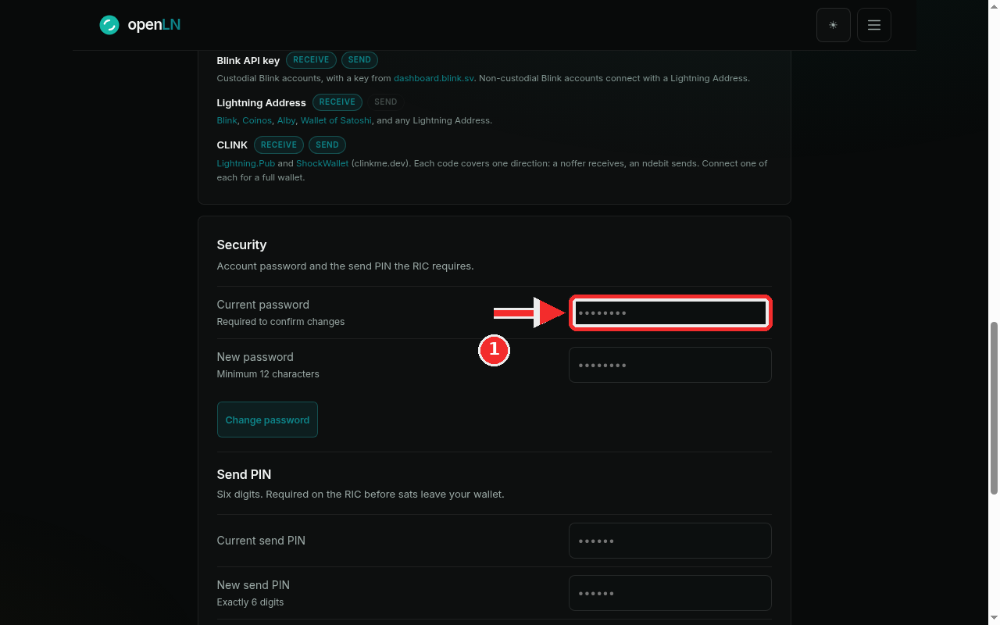
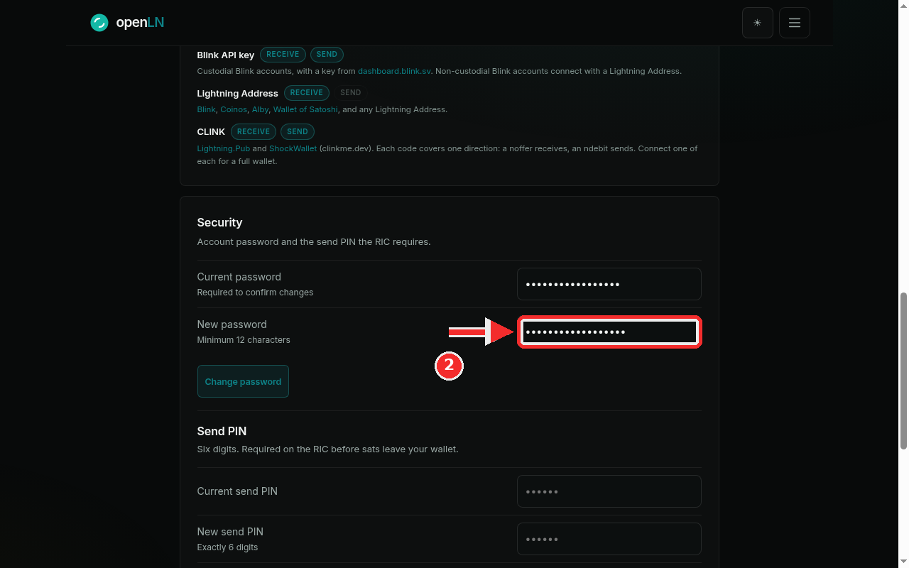

How to change your account password
This guide changes the password you use to sign in to openLN. The whole thing happens in Settings, in the Security card, and takes under a minute. You will need the password you use today: openLN asks for it to confirm the change, and a wrong one is refused. Nothing about your wallet, your sats or your devices is touched by any of this.
- You are signed in to your openLN account (any device, phone or computer).
- You know the current password, the one you sign in with today. The card will not accept the change without it.
- Your new password is ready and is at least 12 characters long. openLN cannot show it back to you later, so keep it somewhere safe.
Open the Security card and type your current password
Open the menu and tap Settings, or go straight to openln.com/app#settings. Find the Security card, the one whose line reads "Account password and the send PIN the RIC requires". The first row in it is Current password. Type the password you sign in with today. The small print under the field, Required to confirm changes, explains why you are asked: openLN wants proof that it is really you before it sets a new password. The field hides what you type behind dots, as usual.

Type your new password and press Change password
In the New password field, type the password you want to use from now on. The rule sits in the field itself: Minimum 12 characters. Then press the Change password button. If the current password does not match the account, the card answers Current password is incorrect and nothing changes, so retype it and press again. If the new one is too short, the card answers Password must be at least 12 characters. On success the status line reads Password changed and both fields clear. Your old password stops working at that moment: the next time you sign in, use the new one.

- 12 characters, always. openLN enforces the same minimum at signup and again on the server, so a shorter password is refused even if it gets past the form.
- Empty fields. If you press Change password with either field empty, the card answers Fill both fields.
- Other devices stay signed in. Changing the password does not end sessions that are already open elsewhere. Each session lasts up to 3 hours and then expires on its own, so on a shared counter device press Log out there if you want it closed sooner.
- Nothing about your wallet changes. The password guards who can sign in, and that is all. Your wallet connection, your sats, and your RIC and card setups stay exactly as they are; openLN never takes custody of your sats.